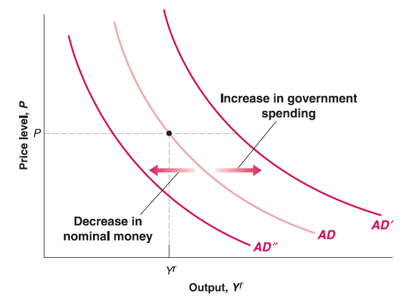
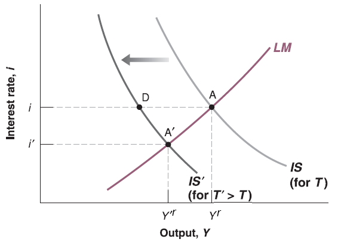
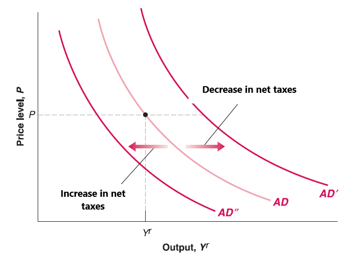
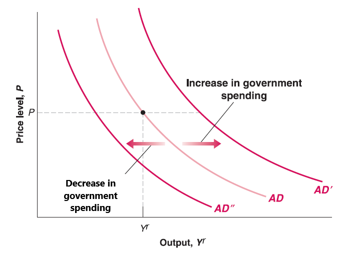
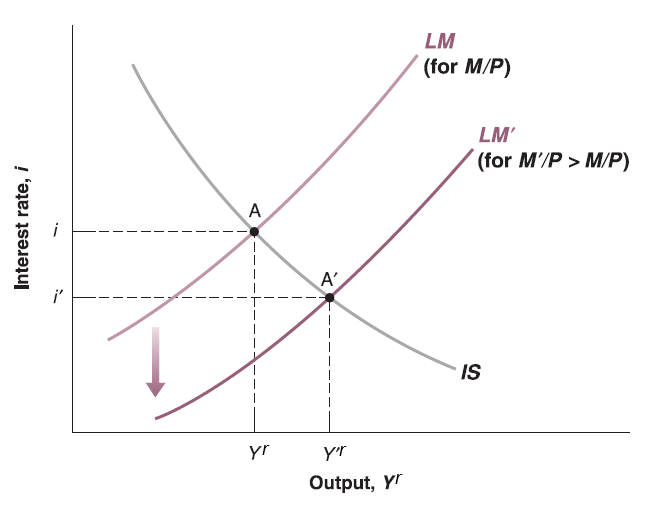
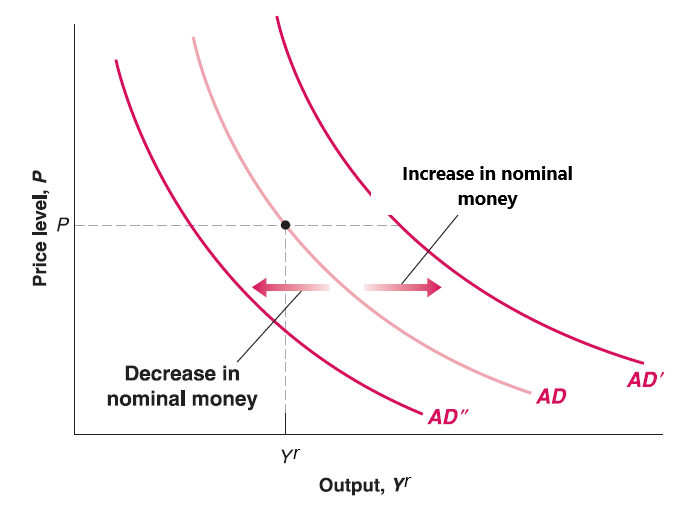

Lecture 13: AS-AD Model
Mingze Huang
2021-07-27
Aggregate Supply Curve
Recall the Aggregate Supply (AS) curve we derived:\(P\equiv P^{e}(1+\mu)F(1-\frac{Y^{r}}{L},z)\)
Now expected price level (\(P^{e}\)) is given by workers’ expectation; mark-up (\(\mu\)) is given by goods market competition; labor force (\(L\)) is given by work-leisure trade-off of labor participants; \(z\) is given catchall variable. All of them are exogenous variables (given outside of the model).
Only two variables are endogenous (determined inside the model): current price (\(P\)) and output (\(Y^{r}\)).
Question 1: How does AS curve shift if mark-up (\(\mu\)) increases?
Question 2: How does AS curve shift if catchall variable (\(z\)) increases?

Aggregate Demand Curve
Recall the Aggregate Demand (AD) curve we derived: \(\frac{M}{P}=Y^{r}\cdot L(I^{-1}((1 - c_{1})Y^{r}+c_{1}T-c_{0}-G))\)
Now nominal money supply (\(M\)) is given by central bank; autonomous consumption (\(c_{0}\)) and marginal propensity to consume (\(c_{1}\)) is given by consumers’ preference; net taxes (\(T\)) and government spending (\(G\)) are given by government. Functions \(L(\cdot)\) and \(I^{-1}(\cdot)\) are given as well.
Only two variables are endogenous (determined inside the model): current price (\(P\)) and output (\(Y^{r}\)).

Aggregate Demand Curve
Recall our IS-LM model: \[
\begin{cases}
(1 - c_{1})Y^{r} = c_{0}-c_{1}T+I(i)+G & \text{IS relation}\\
\frac{M}{P}=Y^{r}\cdot L(i) & \text{LM relation}\
\end{cases}
\] 
- Assume price (\(P\)) unchanged, the increase of net taxes (\(T\)) leads to decrease in output (\(Y^{r}\)) and interest rate (\(i\)).
Aggregate Demand Curve
- Since Aggregate Demand (AD) curve comes from IS-LM model, for any price level (\(P\)), the increase of net taxes (\(T\)) leads to decrease in output (\(Y^{r}\)).
Question 1: How does AD curve shift if net taxes (\(T\)) increases?
Question 2: How does AD curve shift if net taxes (\(T\)) decreases?

Aggregate Demand Curve
In your midterm project, you’ve seen that by IS-LM model
Assume price (\(P\)) unchanged, the increase of government spending (\(G\)) leads to increase in output (\(Y^{r}\)) and interest rate (\(i\)).
Since Aggregate Demand (AD) curve comes from IS-LM model, for any price level (\(P\)), the increase of net taxes (\(G\)) leads to increase in output (\(Y^{r}\)).

Aggregate Demand Curve

Assume price (\(P\)) unchanged, the increase of nominal money supply (\(M\)) leads to increase in output (\(Y^{r}\)) and decrease in interest rate (\(i\)).
Since Aggregate Demand (AD) curve comes from IS-LM model, for any price level (\(P\)), the increase of nominal money supply (\(M\)) leads to increase in output (\(Y^{r}\)).
Aggregate Demand Curve
Question 1: How does AD curve shift if nominal money supply (\(M\)) increases?
Question 2: How does AD curve shift if nominal money supply (\(M\)) decreases?
